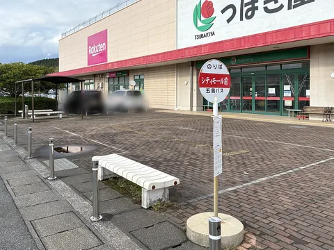
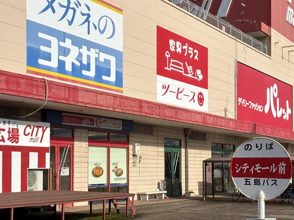
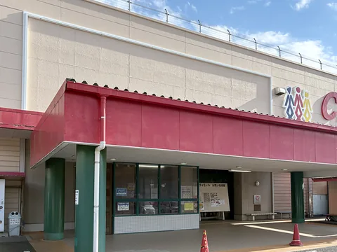
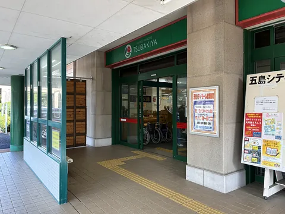
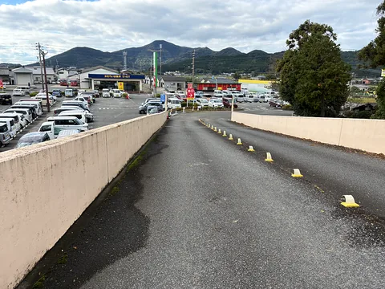
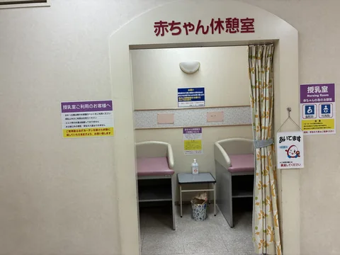
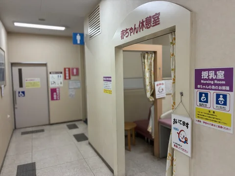

アクセス・駐車場
福江港から車で約10分、五島つばき空港から約15分。無料の駐車場が450台あります。
- 住所
- 〒853-0031
長崎県五島市吉久木町731 - 電話
- 0959-75-0003
- 営業時間
- 10:00〜20:00
専門店の多くは19:00まで。つばき屋・ダイソーは9:00〜20:00、BLOSSOMは21:00まで。
お店により異なります - 休館日
- 年中無休
年末年始は時間が変わります（お知らせ） - 駐車場
- 無料 450台
地図を読み込んでいます。出ないときは、「Googleマップで開く」のボタンから開けます。
行き方
福江港から
車で約10分です。
道順を見る（別の画面で開きます）福江港へ戻るとき
車で約10分です。船の時間に余裕をもってお出かけください。
港までの道順を見る（別の画面で開きます）五島つばき空港から
車で約15分です。
道順を見る（別の画面で開きます）路線バスで
「シティーモール前」で下車します。三井楽線などが止まり、「福江」バス停から約15〜20分、運賃は大人330円です。時刻は五島自動車のものです。
（2025年4月改正の時刻表と乗換案内で、2026年11月25日に確認。くわしくは五島自動車 0959-72-5191 へ）港からのバスの経路を見る（別の画面で開きます）
つばき屋の前の、バスののりば「シティーモール前」（看板は「シティモール前」） 
メガネのヨネザワの前の、バスののりば「シティーモール前」（看板は「シティモール前」）
この停留所の時刻表を見る（別の画面で開きます）タクシーで
中央玄関の右側に、タクシー乗り場があります。お帰りの港や空港へも、ここから乗れます。


写真で見る、モールのまわり
11月に撮影しました。押すと大きく見られます。






島の外から来る方へ
モールまでは、福江港から車で約10分、五島つばき空港から約15分です。
時間は目安です。2026年11月8日に、各社の案内や公の資料で確かめました。天気で欠航することがあります。お出かけ前に、各社の最新の案内をご確認ください。
帰りの便まで、時間があるときは
おみやげのお店を見る長崎カステラや和菓子のお店、お茶のできるお店があります。
館内の設備・お子さま連れの方へ
雨の日も、館内でゆっくり過ごせます。
- 託児所シティハウス（2階）。0歳〜6歳、1時間300円から。10時〜17時は予約なしで預けられます（料金とご案内）
- ゲームセンターファンタジーランド（2階）
- おもちゃおもちゃ屋おやこパンダ
- ATM十八親和銀行
- 授乳室2階 エレベーターの横（南側の男子トイレのそば）。入口の上に「赤ちゃん休憩室」とあります
- 車いす・ベビーカー北側と南側の玄関の入口にあります
- 休憩所1階 ピーパラダイスの前と、2階 ファンタジーランドとパレットの間
- 無料 Wi-Fi2階の休憩所と、リトル・クルサの店内で使えます
- 喫煙所各入口の付近と、外のバスのりば




トイレは1階と2階にあります。場所は館内図でご確認ください。
館内図を見る